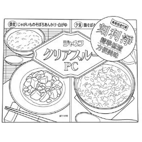
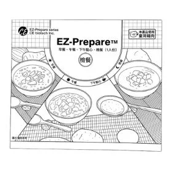

下消化道內視鏡（大腸鏡）檢查同意書
說明 第 1 頁
1檢查介紹
- 檢查方式：使用直徑約 1.2 公分、長度約 130 公分的纖維內視鏡，由肛門進入，依序觀察直腸、乙狀結腸、降結腸、橫結腸、升結腸至盲腸。
- 檢查目的：診斷發炎、潰瘍、瘜肉、腫瘤、出血等下消化道疾病。必要時可在檢查中同時進行切片化驗、瘜肉切除、內視鏡止血、取出異物等處置。
- 自費情形：未經醫師診查，或沒有下消化道檢查的適應症而要求做大腸鏡者，須自費接受本項檢查，費用為檢查費 2500 元另加耗材費用。
2檢查前請注意
- 請主動告知慢性病史（如心血管疾病、慢性肝病、慢性腎病、氣喘等）與過敏史。
- 正在服用抗血小板藥物或抗凝血劑，請主動告知，由醫師評估是否需要停藥。
- 檢查當日暫停降血糖藥物，檢查完成後再依指示服用。降血壓藥、降膽固醇藥可照常服用，不必停藥。
- 清腸是檢查品質的關鍵。請依清腸衛教單：檢查前 2 至 3 天吃低渣飲食，檢查前一天服用清腸藥並喝足量清水，直到排出物清澈、沒有殘渣。
- 檢查當日 00:00 起只能喝水、運動飲料與清腸藥，檢查前 2 小時內不可喝水。
3檢查中與檢查後
- 大腸鏡屬於侵入性檢查，出血與穿孔的發生率約 0.1%，發生時須轉往醫院接受後續治療。
- 檢查中醫師需要充氣，才能完整觀察大腸。如有不適可隨時告訴醫師，無法忍受時也可以中止檢查。
- 檢查完成後醫師會解釋報告。沒有特殊情況，檢查後即可恢復進食。
- 檢查中如發現潰瘍或急性出血，或切除瘜肉時評估為高出血風險，醫師會視情況使用止血醫材：拋棄式內視鏡注射針 1500 元、內視鏡止血夾每支 1000 元。
檢查後如出現持續或加劇的腹痛、腹脹、大量血便或發燒，請立即回診或至急診就醫。
4預約與押金
- 因排程緊湊，取消檢查或改期請於檢查日 3 天前來電。預約後多次聯繫不到，本診所有權取消預約。
- 健保檢查當日請務必攜帶健保卡。未帶健保卡須付門診押金 2500 元，病理切片押金 2000 元。
大腸鏡檢查費用與同意
5檢查費用
自費身分
檢查費 2500 元
另加下方選項與耗材費用
基本選項 二選一，請勾選

日本製代餐與清腸藥
拋棄式檢查褲
二氧化碳充氣
日本製造代餐
日本製造清腸藥
1500 元

台灣製代餐與清腸藥
拋棄式檢查褲
二氧化碳充氣
台灣製造代餐
台灣製造清腸藥
1200 元
臨床需要時使用 止血醫材由醫師在檢查中視情況使用
同一天內，健保只給付胃鏡與大腸鏡其中一項。如要申請商業保險理賠，請先與您的保險公司確認。
6同意書
本人已詳閱上述說明，了解大腸鏡檢查的必要性與可能的風險，同意接受大腸鏡檢查。
此致 木子澄安診所
治療室內設有錄音錄影設備，用於記錄醫療過程並保障雙方權益；設置位置已確保維護您的隱私。